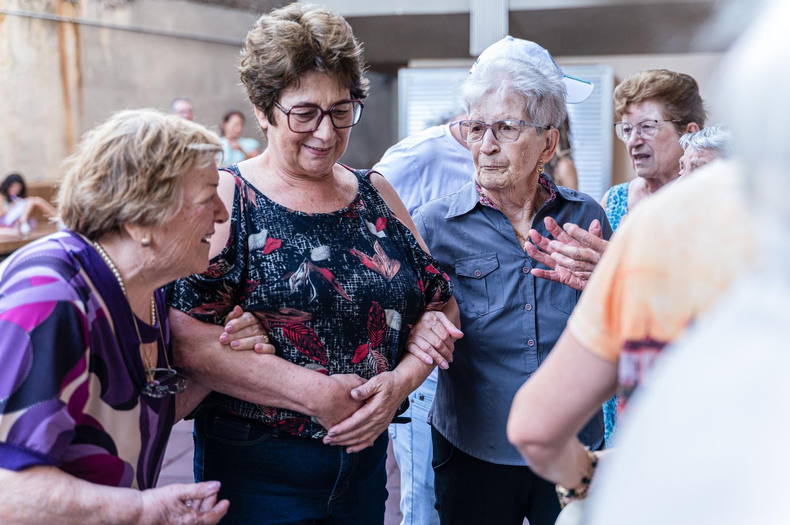

About
About Transformative Life Solutions
A private ADR, mediation, and conflict coaching practice rooted in dignity, respect, and ethical service.
Our founder
Founded by Tanika L. Smith
Transformative Life Solutions was founded by Tanika L. Smith, a seasoned alternative dispute resolution (ADR) practitioner and communication strategist.
Completed Trainings Include
- 40‑Hour Basic Mediation Training
- 24‑Hour Child Access Mediation Training
- 8‑Hour Re‑Entry Mediation Training
- Marital Separation Training
- 36‑Hours Crisis Counseling
Credentials
- Advanced‑Degree Communications Scholar
Affiliations Include
- Member, Maryland Program for Mediator Excellence (MPME)
- Former Day of Trial Mediator, Maryland Judiciary’s Mediation and Conflict Resolution Office (MACRO)
- Rostered Arbitrator, Financial Industry Regulatory Authority (FINRA)
- Member, ADR Section, Maryland State Bar Association
Our approach
Three pillars guide our work
Trauma‑informed practice
A calm, predictable process that puts safety, choice, and respect first.
Culturally competent care
Support that honors each person's background, identity, and lived experience.
Ethics‑aligned service delivery
Strict neutrality, careful screening, and safeguards against conflicts of interest.
An ethics‑aligned separation
Transformative Life Solutions maintains a strict ethics‑aligned separation. All services are structured to avoid conflicts of interest and to protect the integrity of state processes.
Meeting people where they are
We serve clients with virtual and in‑person options, working with families, couples, individuals, community groups, and non‑consumer‑facing workplaces.

Ready to talk it through?
Request a consultation. We'll confirm whether your matter is a good fit, and if it isn't, we'll point you toward free supportive referrals.